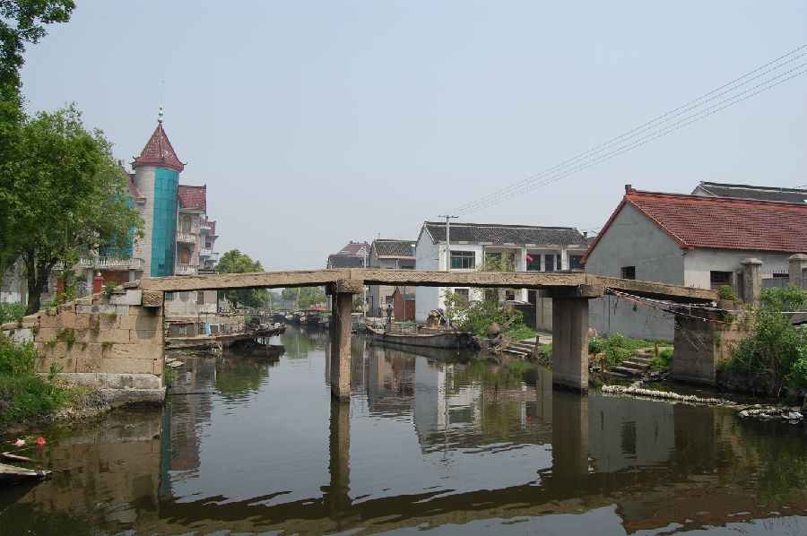
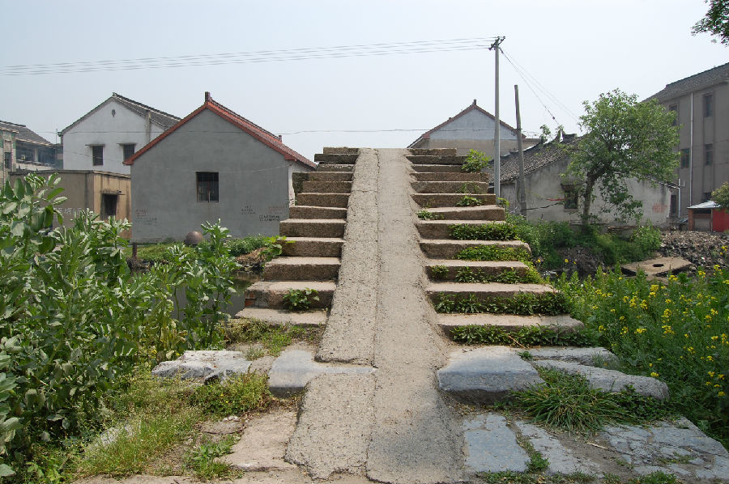

嘉兴市文物保护网 · 市级文物保护点 · 2020-11-02 · 原文


东荷村天德桥位于嘉兴市秀洲区王江泾镇东荷村1组（东岸为嘉善道德村4组，西岸为嘉兴东荷村1组）。据桥额小字知该桥重建于清咸丰九年（1859）。东西横跨天德桥港，系三孔无栏梁式石板桥，全长约25米，桥面宽1.75米由3块石板并列组成，净跨15.4米，单板最大跨度6.63米，桥底距水面高度2.9米。东西落坡略呈喇叭状，东西各为12级石阶。南北有桥额“重建天德桥”，旁镌刻小字“咸丰九年七月□□”，下有桥联，北为“嘉名仍天德应和绩德必昌，杰构赖人功当□□功不易”；南为“西通秀水鼓声菱唱远鸳湖，东接魏塘十里棹诗逥鹤者”。桥身有蟠纹、卷莲纹装饰，桥面中心雕有环形纹饰。该桥处在重要的水上交通要道上，是当地重要的历史建筑，建筑做工较考究，雕工精美，具有较高的艺术和历史价值。2010年公布为嘉兴市文物保护点。